실제 iPhone 앱 탐색 증거
2026-09-30 · iPhone 17 · XCTest 직접 캡처. 대표 비식별 화면 20장. 데모 화면은 실제 차량 지원 증거가 아닙니다. 전체 기능 검증은 진행 중입니다.
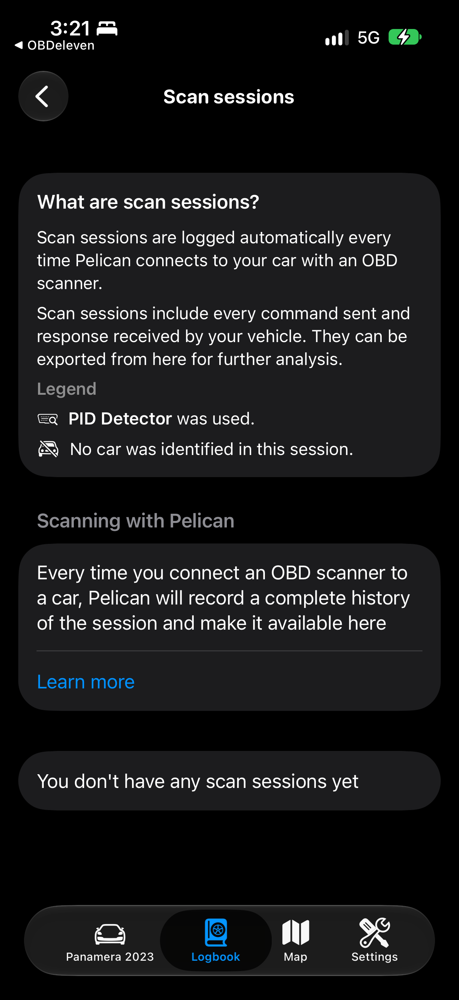
Pelican-scan-sessions실제 화면 · BenchmarkTests/testRecordingBranches()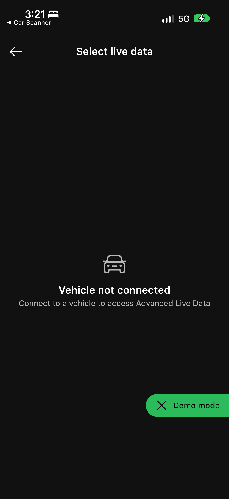
OBDeleven-live-data-list실제 화면 · BenchmarkTests/testRecordingBranches()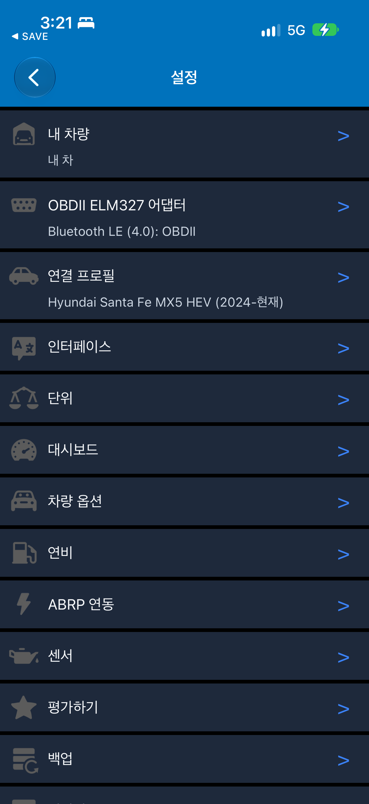
CarScanner-settings-open실제 화면 · BenchmarkTests/testRecordingBranches()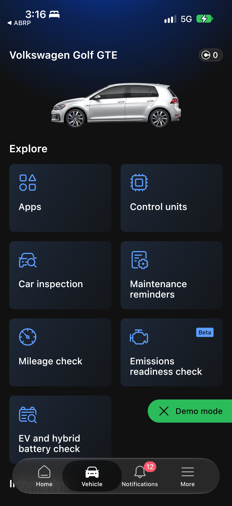
OBDeleven-vehicle-settled실제 화면 · BenchmarkTests/testDeepScreens()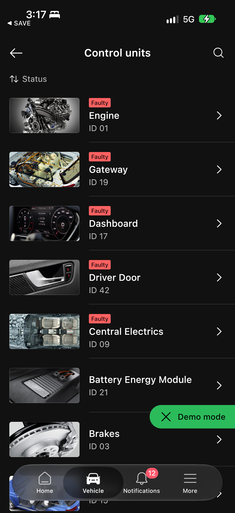
OBDeleven-control-units실제 화면 · BenchmarkTests/testReadOnlyBranches()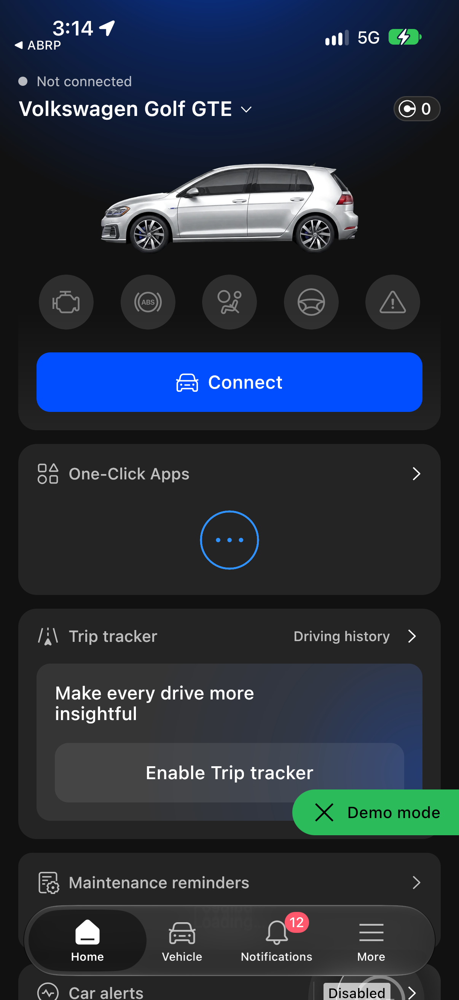
OBDeleven-entry실제 화면 · BenchmarkTests/testFourApps()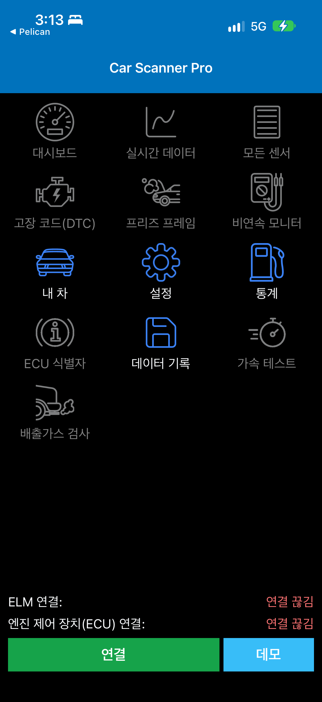
CarScanner-entry실제 화면 · BenchmarkTests/testFourApps()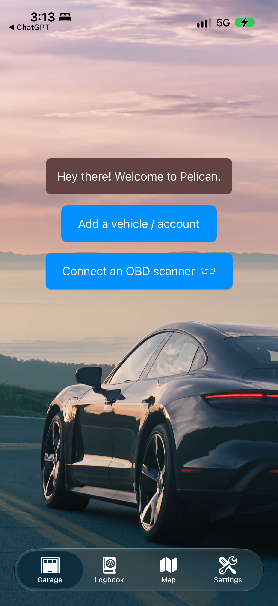
Pelican-entry실제 화면 · BenchmarkTests/testFourApps()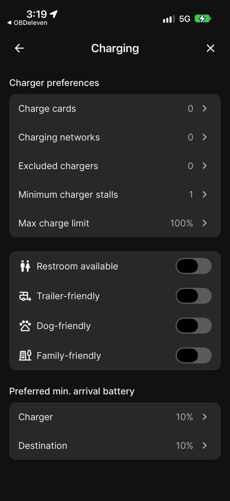
ABRP-charging-options실제 화면 · BenchmarkTests/testMoreBranches()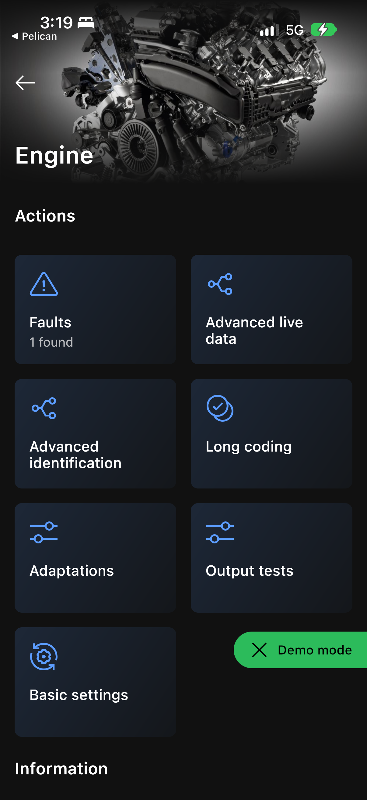
OBDeleven-engine실제 화면 · BenchmarkTests/testMoreBranches()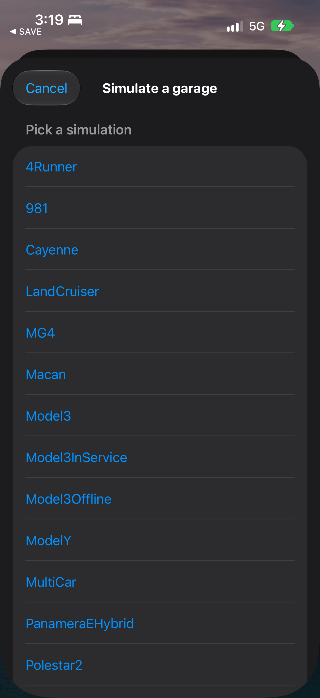
Pelican-demo-list실제 화면 · BenchmarkTests/testMoreBranches()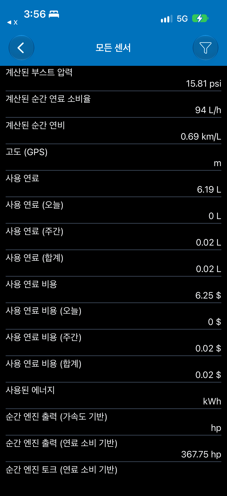
CarScanner-all-sensors-demo데모 센서 목록 · testCarScannerVisibleFunctionsVerified()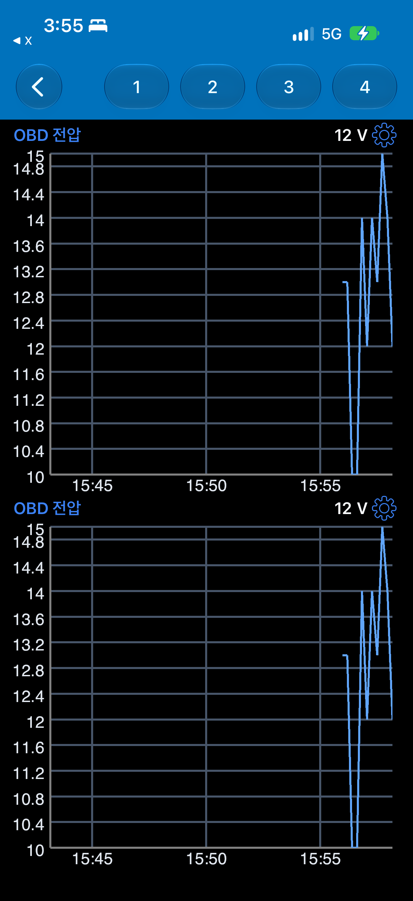
CarScanner-live-data-chart-demo데모 그래프 · testCarScannerVisibleFunctionsVerified()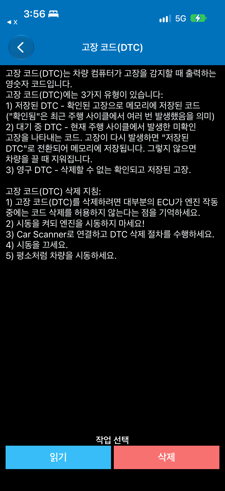
CarScanner-DTC-read-only읽기/삭제 메뉴 진입만 확인 · 둘 다 미실행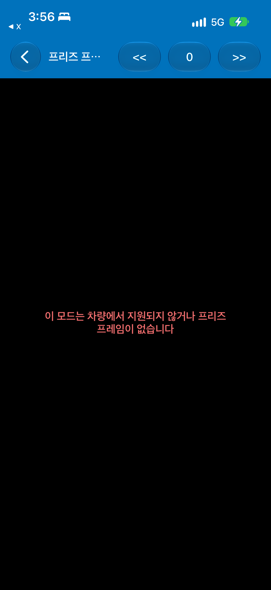
CarScanner-freeze-frame-empty데모의 지원/데이터 없음 화면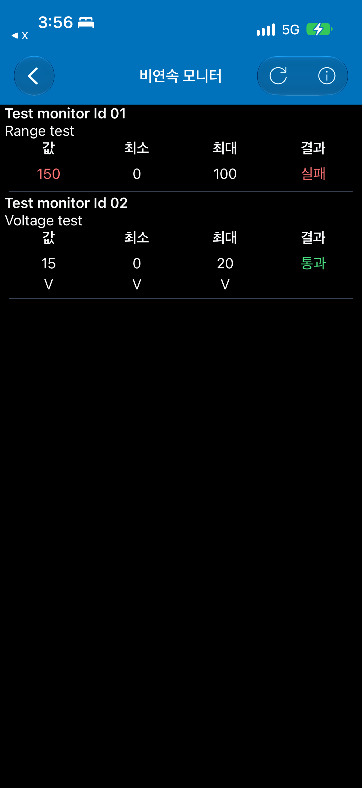
CarScanner-readiness-demo합성 데모 결과 · 실제 차량 검사 아님CarScanner-dashboard-page-2빈 페이지 진입 · 편집 없음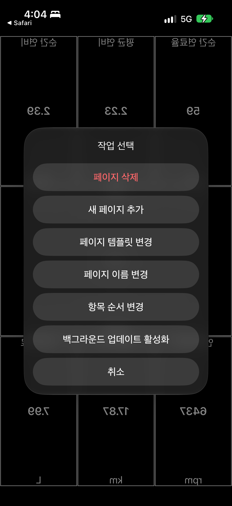
CarScanner-dashboard-actions페이지 관리 메뉴 · 선택 없음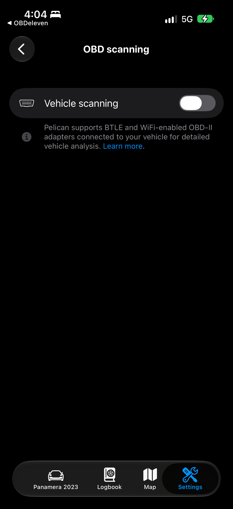
Pelican-OBD-scanning-settings스캔 비활성 상태 유지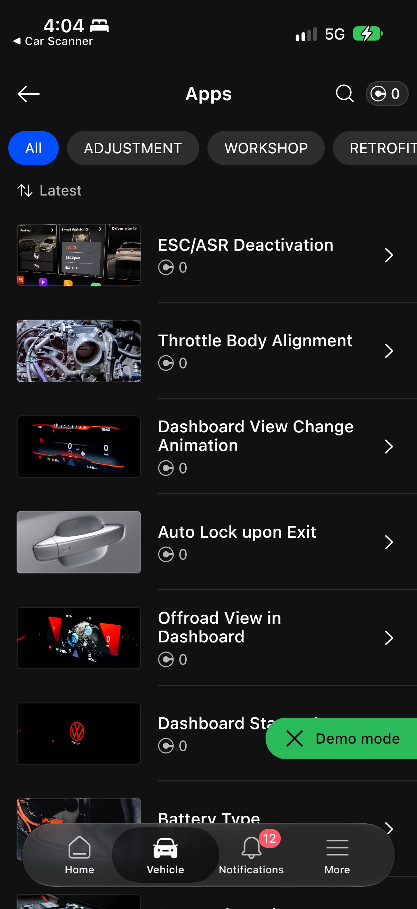
OBDeleven-apps-catalogue목록/카테고리만 관찰 · 차량 기능 실행 없음